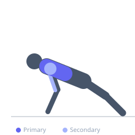

Exercise guide / Decline Push-Up
Decline Push-Up
The decline push-up is performed with the feet elevated above the hands, creating a downward angle of the body. This positioning shifts the pressing stimulus toward the upper (clavicular) portion of the pectoralis major and anterior deltoid, while also increasing the total amount of body weight lifted compared to a standard push-up.
Primary muscles
pectoralis major clavicular
Secondary muscles
pectoralis major sternal
deltoid anterior
triceps lateral head
triceps medial head
Stabilizers
transverse abdominis
rectus abdominis
Equipment
No Equipment (Bodyweight)
Optional
Flat Bench


Starting position
- Place feet on a bench or elevated surface and hands on the floor slightly wider than shoulder-width. Body should form a straight angled line with hips higher than shoulders.
Setup
- Choose a stable elevated surface for the feet. Higher elevation increases upper chest and anterior deltoid contribution and difficulty.
Steps
- Step 1: Place hands on the floor slightly wider than shoulder-width; rest feet on an elevated surface such as a bench.
- Step 2: Extend arms fully and brace the core to create a straight line from head through hips to feet.
- Step 3: Inhale and lower the chest toward the floor by bending the elbows, keeping them at roughly 45 degrees from the torso.
- Step 4: Pause when the chest is close to the floor, then exhale and press back to the starting position.
Coaching cues
- Drive the floor away from you as you press
- Keep your glutes squeezed to maintain a rigid body line
Breathing
- Inhale on the way down; exhale as you press up.
Range of motion
- Lower until the chest nearly touches the floor, then press to full extension.
Tempo
- 3-0-1-0
Common mistakes
- Letting the hips sag — this reduces the pec load and stresses the lower back
- Placing the bench too high before adequate shoulder stability is developed
Safety
- Avoid this variation if you experience shoulder impingement during the descent
- Keep the neck neutral — do not let the chin jut forward
Training
- strength: 5–10 reps
- hypertrophy: 10–20 reps
- endurance: 15–30 reps
- strength: 3–4 sets
- hypertrophy: 2–4 sets
- endurance: 2–3 sets
- Rest: {'strength': 90, 'hypertrophy': 60, 'endurance': 30}